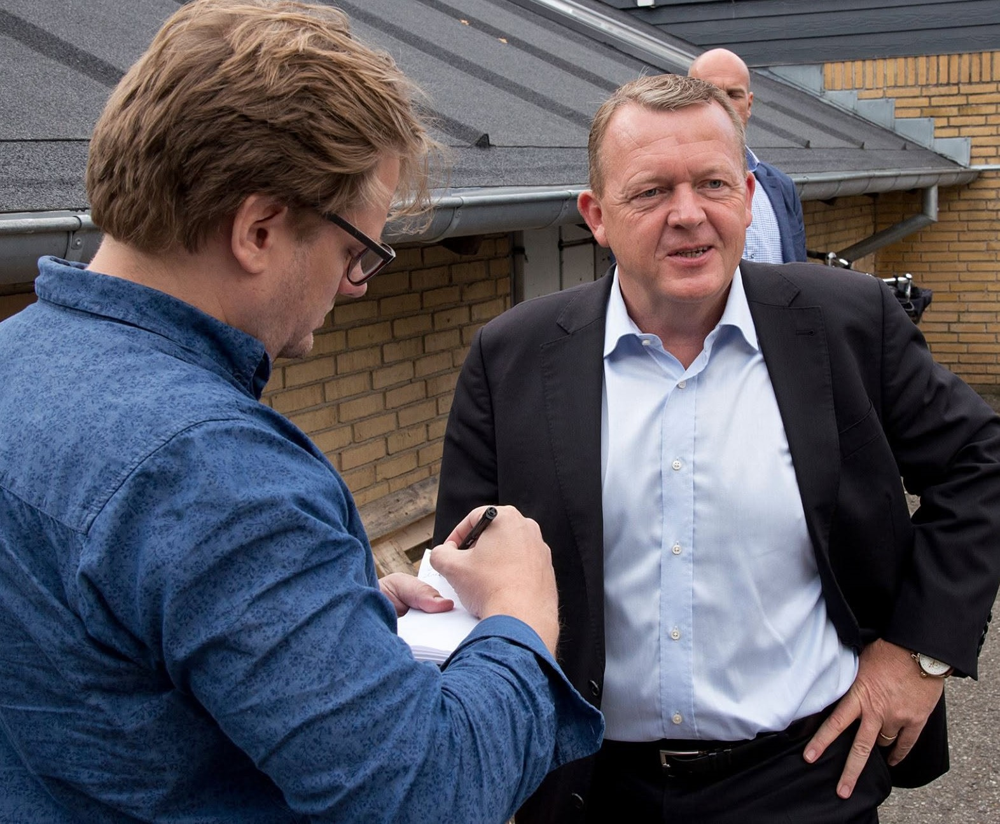
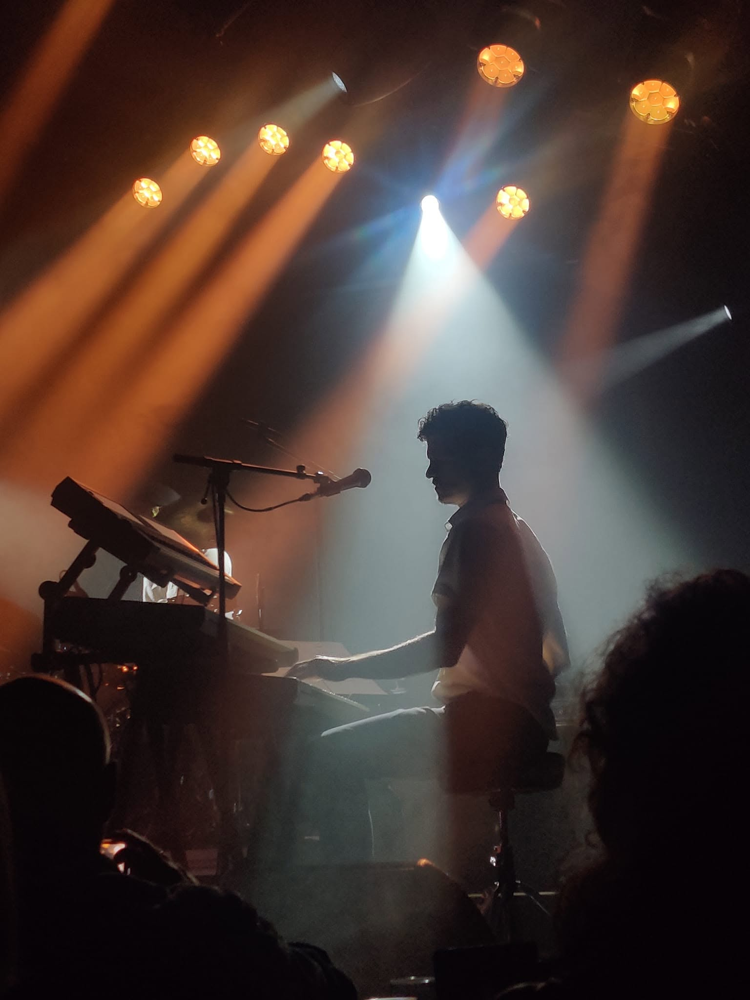
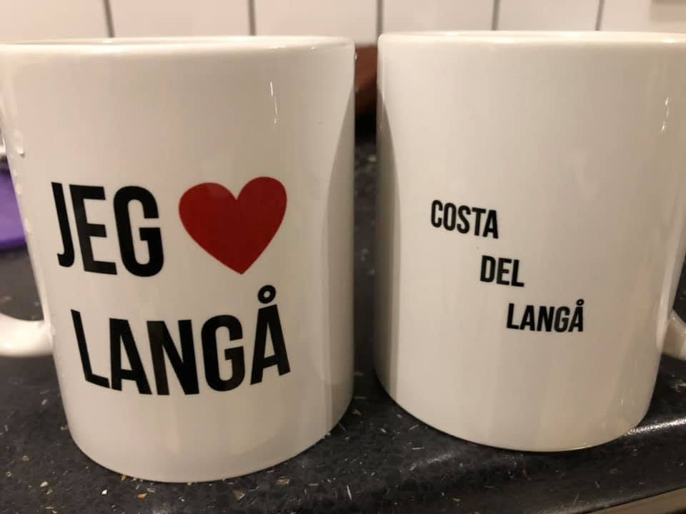
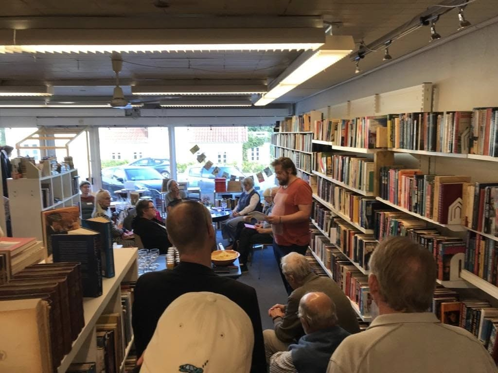
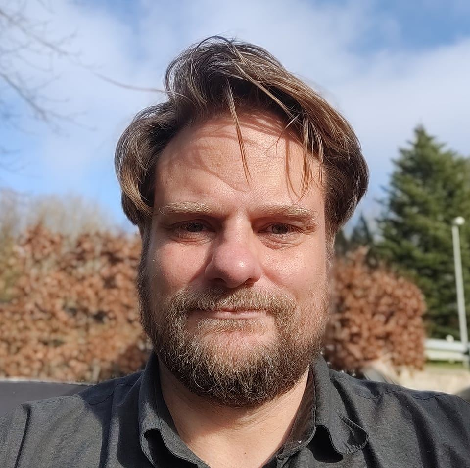

Journalistik
Find historien. Stil spørgsmålene
Artikler, interviews, portrætter og reportager. Journalistisk arbejde begynder med nysgerrighed og ender forhåbentlig med, at læseren ved lidt mere.
Læs mereJournalistik · Kommunikation · Formidling
Og fortæller den, så den bliver læst

Jeg hedder Bjarke og er journalist. Jeg skriver historier, interviewer mennesker og finder det interessante dér, hvor andre måske går forbi. Det gør jeg både som journalist og for virksomheder og organisationer, der har noget på hjerte.
Fælles for det hele er nysgerrigheden. Der skal være en historie at fortælle. Og den skal fortælles ordentligt.
Journalistik, lokale historier og personlig formidling

Journalistik
Artikler, interviews, portrætter og reportager. Journalistisk arbejde begynder med nysgerrighed og ender forhåbentlig med, at læseren ved lidt mere.
Læs mere
Langåen
Mit lokale nyhedsmedie om mennesker, foreninger, virksomheder, kultur og politik i Langå.
Læs mere
Foredrag
Et personligt foredrag om tab, sorg og livet efter min brors selvmord.
Læs mere02 · Presse & kommunikation
“Før vi skriver, skal vi vide, hvorfor nogen skulle have lyst til at læse det.”
Jeg hjælper virksomheder og organisationer med at finde ud af, hvad de egentlig vil fortælle, og hvem der skal have lyst til at lytte. Derefter finder vi formen. Det kan være pressemeddelelser, artikler, webtekster eller indhold til sociale medier.
Se hvad jeg kan hjælpe med
03 · Journalisten
Jeg har arbejdet med journalistik i mange år. Nogle har ansat mig. Nogle har hyret mig. Og nogle historier har jeg selv besluttet skulle fortælles.
Jeg har skrevet om politik, mennesker, virksomheder, hunde, fodbold, sorg og en hel del andet. Fælles for det hele er nysgerrigheden efter at finde ud af, hvad der egentlig foregår.
Jeg skriver, interviewer og udvikler journalistiske idéer. Og jeg tror stadig på, at en god historie begynder med et menneske, der gider stille et spørgsmål mere.
04 · Langåen
Langåen skal være et professionelt og uafhængigt lokalt nyhedsmedie midt i Langå. Ikke et medie, der kigger forbi, når noget går galt, men et medie, der er der hver dag og ved, hvad der rører sig.
“Journalisten skal være der, mens historien bliver til.”
Læs om Langåen05 · Kontakt
Mangler du en journalist, en tekst eller hjælp til at finde historien? Eller har du bare en idé, du gerne vil vende? Så tag fat i mig.